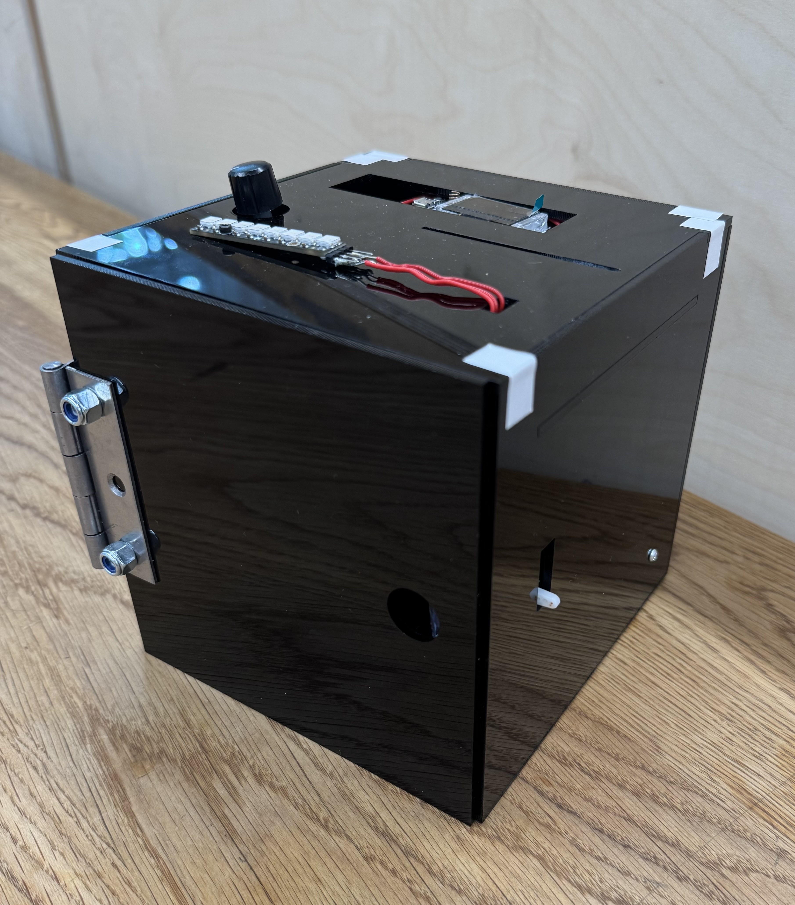
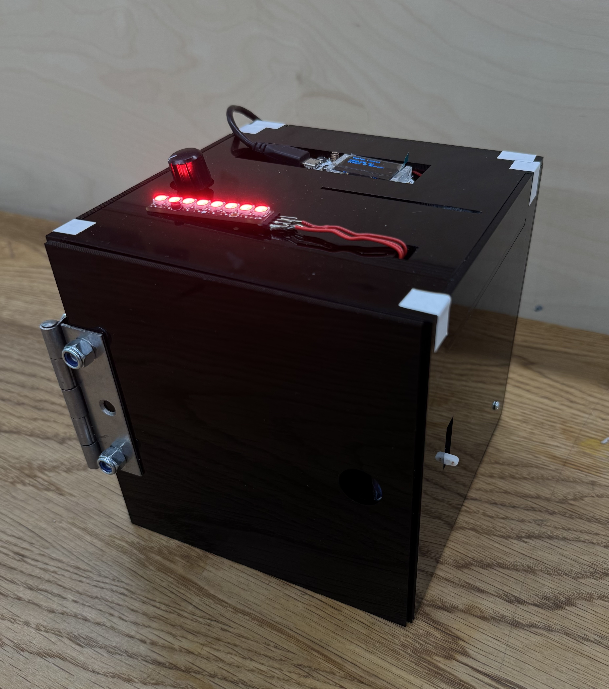

ESP32 Sensor Safe

Working in a pair, I built a physical safe secured by several distinct unlock methods, each driven by a different electrical sensor or input, all coordinated through a single ESP32 microcontroller. Rather than relying on one form of authentication, the project explored what it would take to combine multiple, genuinely different unlock mechanisms within one embedded system.
My focus was on the electronics and firmware side: wiring up the sensors, writing the embedded C++ logic to read and validate each input method, and making sure the system behaved reliably when methods were combined or used out of order. It was a good introduction to the practical challenges of embedded systems — debugging at the hardware level, managing multiple input sources cleanly in code, and getting components to work together rather than in isolation.

